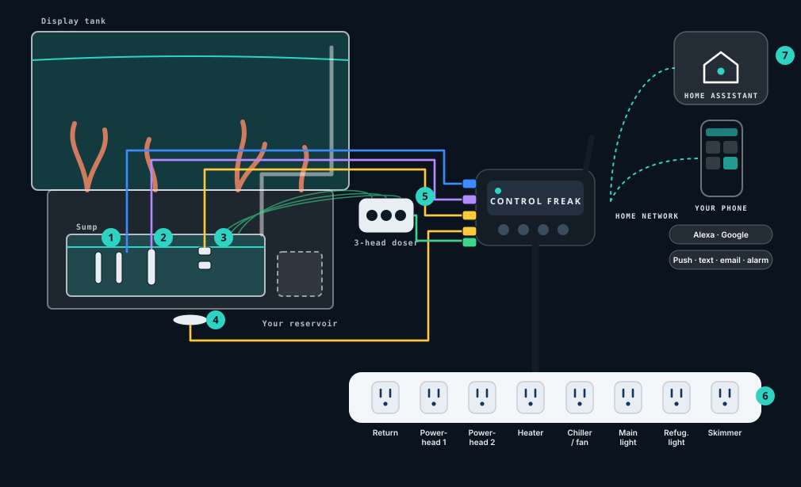

How many apps do you have to open to control your smart products?
Home Assistant comes pre-installed with the Control Freak integration, so the tank and the rest of the home land in one place — and you can simplify to a single app. Multi-platform integration built in: ask Alexa what the status is, tell Google to adjust the temperature, and receive automated voice alerts to let you know when something is out of balance. Home Assistant itself stays on your home network.
Built for sump-tank reef keepers.
Reliable control and alerts without wiring a DIY board or juggling a stack of vendor apps. For hands-on keepers who run — or want — Home Assistant, and care that pumps and heaters keep doing the right thing when Wi-Fi or an app hiccups.
What makes it different
Keeps working when the internet doesn’t
The box under the stand runs the tank. Ethernet, Wi-Fi, and its own Wi-Fi fallback.
Home Assistant pre-installed
Control Freak integration already set up. One hub for tank and home. Ask Alexa what the status is, tell Google to adjust the temperature, and get voice alerts when something is out of balance.
Auto water leveling + leak alarm in the kit
Tops up evaporation with overfill lockout, plus a floor leak sensor. Just add a reservoir.
Pumps keep running if the controller loses power
Return and powerheads stay on. The heater turns off and falls back to its own thermostat.
Heater cutoff
Probes watch the tank and switch the heater off above your limit.
Set up in minutes
Scan a QR code. Keyed, colour-coded plugs only go where they belong.
In perfect balance
Continuous dosing from a three-head doser for calcium, alkalinity and magnesium, with pH right on the home screen.
What’s in Reef Control Pro
- Controller with Home Assistant + Control Freak integration
- Power Hub — 8 outlets
- Two temperature probes (room for more)
- Auto top-off pump + level sensors (you add the reservoir)
- Leak sensor
- 3-head doser
- pH probe
Room to grow
Planned optional extras may include ORP and salinity probes, extra temperature probes, an extra Power Hub, and a reservoir.
To be clear about what it isn’t: no subscription, no automatic water changes, no automatic chemistry adjustments from probe readings, no LED-brand dimming protocols, and up to 8 outlets per controller.
Your reef, and every smart thing in your home, in one app.
Reef Control Pro comes with Home Assistant already installed and the Control Freak integration already connected. You get everything people love about it, without the setup. Just plug it in.
One app. No more app juggling.
How many apps do you open today? Home Assistant puts your tank and the rest of your smart home in one place, so you have one app to check and one to control.
Your brands finally work together
Home Assistant works with over 1,000 brands through 1,500+ integrations. Lights, plugs, thermostats, locks, speakers and cameras you already own can finally talk to each other.
Works when the internet doesn’t
It runs on the controller on your home network, not in someone else’s cloud, so it responds fast and keeps working when the internet doesn’t. Your data stays home.
Ask, don’t open
Ask Alexa what the status is, tell Google to adjust the temperature, or use Siri through HomeKit, and get automated voice alerts when something is out of balance.
Peace of mind, all over the house
Anything your tank knows can set off something else: lights, speakers, thermostats and alerts on every phone. A few ideas are below.
Yours to keep
Your setup lives in your home, not on a company’s server. Home Assistant is free and open source, and Control Freak adds no subscription.
Works with the Control Freak gear you already own: every Control Freak product is a complete kit on its own. If a Control Freak controller you already have has a free port or relay, Home Assistant can put it to work for this product too.
Ideas you can build in Home Assistant · examples with your own devices
Water under the stand
Hallway lights flash and every speaker says where.
Feeding time
A button by the tank starts Feed mode; pumps pause, then resume.
Reef sunset
As the reef lights ramp down, the living-room lamps dim with them.
Home Assistant figures: home-assistant.io, October 2026. Home Assistant is a trademark of the Open Home Foundation. Your lights, speakers and thermostat aren’t in the box. Concept · example automations.
One controller under the stand.
The probes, top-off, leak sensor and doser plug into the controller; the pumps, heater and lights plug into the Power Hub. Keyed, colour-coded plugs only fit their own port — scan the QR code and you’re set up.

- Temperature probesTwo in the kit, room for more. The heater stands down above your limit.
- pH probe (Pro)pH right on the home screen, with trends.
- Top-off sensors and pumpTops up evaporation with an overfill lockout. Just add a reservoir.
- Leak sensorWater on the floor under the stand is caught early.
- 3-head doser (Pro)Ca, Alk and Mg in small, steady doses.
- Power Hub8 smart outlets. Return and powerheads stay on if the controller loses power.
- Home Assistant, pre-installedOne app for the reef and the home. Voice through Alexa and Google; alerts when you’re away.
Try the home screen
All calm in the reef. Toggle the 8 smart outlets, start Feed or Maintenance to pause the pumps, tap a dosing head for the next dose, try a leak or high-temp “what if”, or preview a sample alert.
This is a marketing simulation with example data — not live hardware and not the real app. No login, no cloud.
Join the beta
We’re looking for reef keepers to test Reef Control Pro on their own tanks before launch.
Join the beta